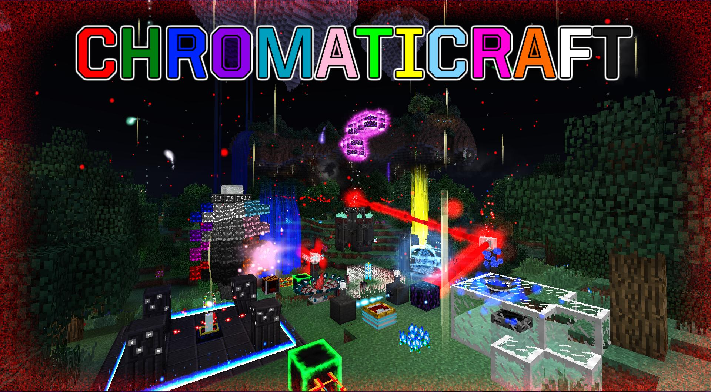

Overview
ChromatiCraft is a very large exploration-, experimentation-, and puzzle-based magic mod centered around harnessing and focusing the power of sixteen colors of crystal energy present in the Minecraft world. Each color of energy is associated with certain forces, traits, or concepts, ranging from light to protection to time.In ChromatiCraft, you can use this energy in two main ways.
One major use is to drive various devices which run on the energy. These have a wide variety of applications, and can be used to reshape the world, protect an area, acquire or transport resources with ease, augment farms of various kinds, enhance the power of other machines, create stunning decorations, and much, much more.
The other major use of the energy is to imbue yourself with magic powers, which give you the ability to do things like substantially extend your reach, teleport at will, project an aura of light, unify your inventory with machines, see what should normally be hidden, rain fire upon the world, or even phase through solid blocks.
Note to servers: ChromatiCraft requires large amounts of exploration, in chunks that have not been generated without ChromatiCraft. It is recommended that you pregenerate a large area in the overworld, as well as allocate some extra hard drive space for the dimension (which resets and should never exceed a few GB in size at worst, and only temporarily at that).
The World
While exploring, you will occasionally find an unusual structure, made of dark stone columns, beams, and tiles. Near the top is a ring of eight blocks engraved with a strange, glowing symbol. At the top of the structure sits a glowing beacon, one visibly and audibly (and if you get too close, palpably) radiating with raw crystal power.The world is full of other structures - many buried or otherwise at least partly hidden, and all laden with valuables - and interesting blocks as well. Many of these will not be noticeable to you at first, sometimes even while directly looking at them; as you progress, you will gain the ability to recognize and make use of them.
One of the earliest things you will notice are Cave Crystals, large outcrops of solidified crystal energy, and which radiate weak effects to nearby creatures. Crystals generate in every dimension except the end, and are most frequent in the Twilight Forest. These crystals will be invaluable to your crafting efforts, both whole and their shards.
With ChromatiCraft, there are also new biomes in the map, including a forest full of multicolored trees and one littered with pools of liquid ender. These too contain both secrets and unique points of interest.

You will also find the rare Luminous Cliffs, comprised of huge terraces of land forming large overhangs and deep cave-like alcoves, as well as floating islands and foliage, creatures, and objects not found anywhere else.
Progression
Progression in ChromatiCraft is primarily based around cycles of exploration and construction, where you acquire new knowledge via scavenging fragments from various locations, then return home to apply those and create new things, as well as experiment to fill in gaps in that information. You spawn unable to produce anything beyond the informational book (the Chromatic Lexicon) and the basic interaction tool (the Elemental Manipulator). From that point, you will need to "unlock" every recipe and ability via this process.As a result, ChromatiCraft is not designed to be used immediately in a new world; it is expected players will start by doing other things and will naturally acquire those first fragments that allow them to meaningfully begin. This also means that it is not wise for it to be the sole large mod in a pack; that will force you to focus on the mod in a way that was not intended, making for a rather arduous experience.
At first, your abilities and options will be very limited, and the pylons of energy will be little more than scenery and a small area hazard. As you advance, you will unlock new ways of producing both materials and constructs, new ways to expedite everything from resource collection (including fragments) to construction, and gain an increasingly deep understanding of the mechanics of the various crystal elements and how to harness them.
Once sufficiently deep into the progression, you can finally start to harness the energy directly, both for your own abilities and to craft and operate new devices. Because pylons are fixed in location, nor are they suitable to build near, you will need to construct a transport network across large distances, using repeaters to relay the signal from the source.

Transporting energy.
Many constructs, especially the more powerful ones, will draw this energy directly from the network; others will require it to be exchanged with a different transport medium, such as miniature repeaters - often indoors or between blocks - or an ambient radiation in a small area. Many constructs also require some kind of structure built to focus this energy.
Towards the end of the progression, you will learn how to build an access point to another place entirely, one where these forces reign supreme, and which might contain clues as to where all those fragments and energy sources came from...